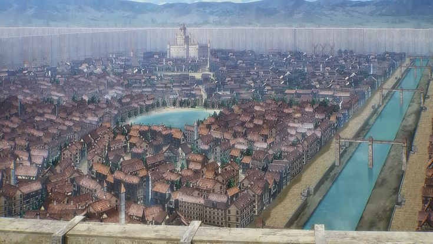
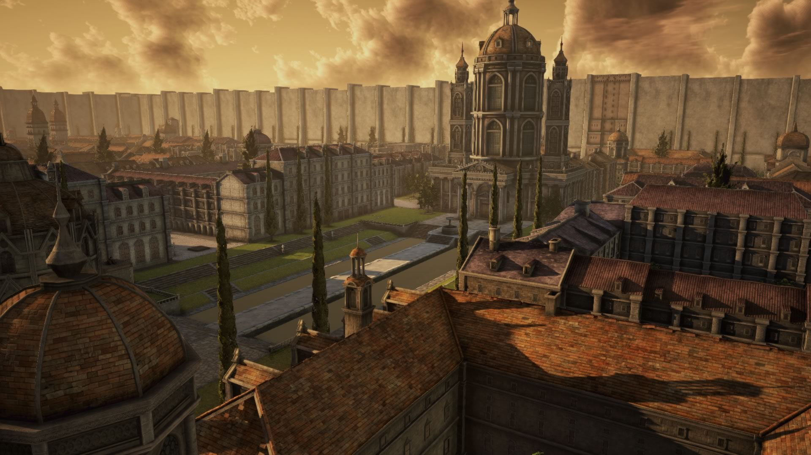
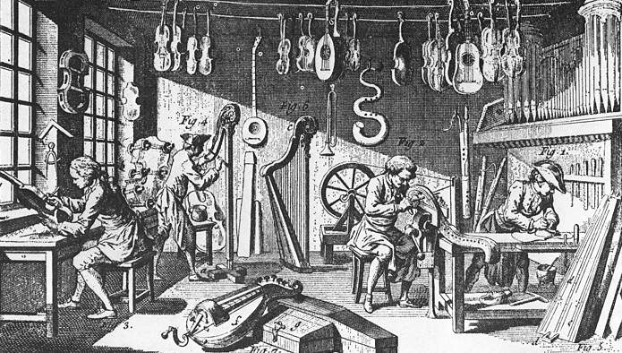
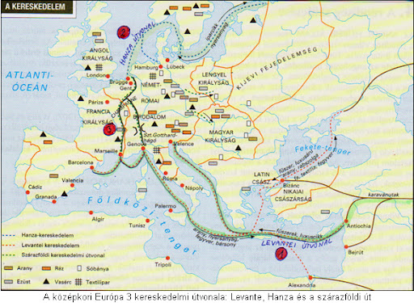

Középkori Városok
A középkori városok Európa városfejlődésének fontos szakaszát jelentették. Ezek a városok általában falakkal védett területeken épültek, és jelentős kereskedelmi központokká váltak.
Középkori Városok kialakulásának helyszínei:
- Földrajzi helyek:
- Folyók és hegység találkozása
- Folyók torkolata
- Utak kereszteződése
- Hegyvidék és síkság találkozása
- Királyi, egyházi, földesúri székhelyek (várak-kolostorok)
- Nyersanyaglelőhelyek (bányák)
- Kereskedelmi-piaci központok (vásárok)
- Ókori városok romjai
| Város | Leírás |
|---|---|
| Lübeck | Északi Hanza-kereskedelmi város |
| Velence | Déli Levantei-kereskedelmi város |
| Párizs | Híres középkori város |
Középkori Városok típusai:
- Szabad királyi városok:
- A király alá tartoznak, pl.: vásárvárosok és bányavárosok
- Mézővárosok:
- A földesúr alá tartoznak
Középkori Kereskedelem és a Kommuna:
A városi polgárok kommunákat, városi önkormányzatokat alapítottak. A városi önkormányzat egyik alapvető eleme a szabad elöljáró-választás volt: a polgárok az önkormányzat testületeit és tisztségviselőit, a város papjait, később parlamenti követeit is maguk választhatták meg.
A városi önkormányzat legjelentősebb szerve a magisztrátus volt. A szűk körű magisztrátus döntött a legfontosabb kérdésekben:
- Polgárjog megadása
- Ellenőrizte a városi tisztségviselőket
- Ítélkezett büntetőügyekben
- Intézte a város gazdasági ügyeit, valamint az adószedést is
- Gondoskodott a rend fenntartásáról, az oktatásról, az egészségügyről
- Irányította a városfalak, a templomok, a városháza, a hidak építését
Városi Kiváltságok:
- Különleges királyi kiváltságok
- A várost fallal kellett körbekeríteni (kiváltság és kötelezettség)
- Vásártartás joga: heti vásárokat és országos vásárokat tarthattak
Jelentős kiváltság volt az árumegállító jog. Ennek értelmében a városokon áthaladó kereskedőket feltartóztathatták útjukban, áruik kirakására kényszeríthették őket, a kereskedőknek vásárvámot kellett fizetniük és nem térhettek el a helyi árszabástól.
A középkori Városi Polgárság:
A polgár személyében szabad volt, nem állt magánföldesúri joghatóság alatt, közvetlenül a király alá tartozott.
A polgár mentes volt minden jobbágyi szolgáltatás alól, szabadon választhatta meg lakóhelyét, lehetett tulajdona, városi ingatlana, ezeket szabadon örökíthette.
A városokban kialakult az arányos közteherviselés, azaz az adó nagysága a vagyoni helyzethez volt kötve.
A középkori Városok Társadalma:
- Patríciusok:
- Legvagyonosabb kereskedők, iparosok, telektulajdonosok
- Kezükben volt a város irányítása (legfontosabb tisztségek)
- Plebejusok:
- Elszegényedett kézművesek, cselédek, hajósok, bérmunkások stb.
- Polgárjogban nem részesültek, kizártak a polgárjogból
A polgárság között kialakult szokás szerint a városba szökő paraszt egy év és egy nap elteltével szabad emberré vált, azonban ez nem járt automatikusan polgárjoggal.
Középkori Céhek
Azok az iparosok, akik ugyanazon mesterséget űzték, érdekeik védelmére céhekbe tömörültek (német, 'egyesülés, egylet'). Mivel a piac szűk volt, ezért úgy védekeztek a túltermelés, az egymás közötti verseny és az idegen áruk ellen, hogy szigorúan szabályozták a termelés és az értékesítés egész folyamatát.
A szerveződés alkalmas volt arra, hogy a céh egy-egy árucikk gyártását monopolizálni tudja. Ennek volt egyik jele, hogy minden eszközzel üldözték a kontárokat, azokat az iparosokat, akik nem tudtak bekerülni a céhbe, vagy máshonnan költöztek a városba.
A céh biztonságot nyújtott tagjainak, mert a verseny kizárásával áruinak biztos piacot garantált. A céh élén egy-két céhmester állt, akiket a mesterekből álló céhgyűlés választott.
A céhbe nem volt könnyű bekerülni, ehhez hosszú évekig inaskodni kellett egy mesternél, majd a legény már mint segéd dolgozhatott tovább tanítójánál. Ezután a legény vándorútra kelt, városról városra járt, és idegen iparosoknál csiszolta tovább tudását.
Ha hazatért, elkészítette mestermunkáját, amelyet a céh vezetői bíráltak el. Ha elfogadták, akkor a legényből mester lehetett, és saját műhelyt alapíthatott – ha tudott. (rengeteg pénz)
Középkori Kereskedelem
A céhek nagy mennyiségű árut állítottak elő, amit főként a városok piacán és annak vonzáskörzetében értékesítettek. A kereskedők felvásárolták a felesleget és távolabbi vidékekre szállították, így kialakult a távolsági kereskedelem, melynek Európán kívüli legtávolabbi úti célja India és Kína volt.
A korban két nagy tengeri útvonal alakult ki:
- Északi Hanza-kereskedelem:
- 1160-ben alapított kereskedő szövetség, melybe az Észak európai városok tartoztak
- Az áru az Északi tengeren keletről érkezett (Oroszország)
- Alapító tagjai Lübeck és Hamburg
- Főleg tömegárukat szállítottak (pl. szarvasmarha, juh, gabona, fa, prém)
- Déli Levantei-kereskedelem:
- A Karaván útón keletről érkező, majd a Földközi-tengeren továbbszállított áruk, melyek főleg Észak-Itáliába, Genova vagy Velencébe mentek
- Főleg keleti luxuscikkeket importáltak Európába, cserébe a rengeteg nemesfémért (15. században aranyéhséghez vezetett földrajzi felfedezések)
A két kereskedelmi térség összekapcsolását és az áruk mozgását belső, szárazföldi utakon bonyolították le: Velence és Genova városától, Észak-Itálián át, Franciaország területén keresztül, Champagne-t érintve Flandriáig terjed. A Gibraltári-szorosnál találkozott a két kereskedelmi útvonal.